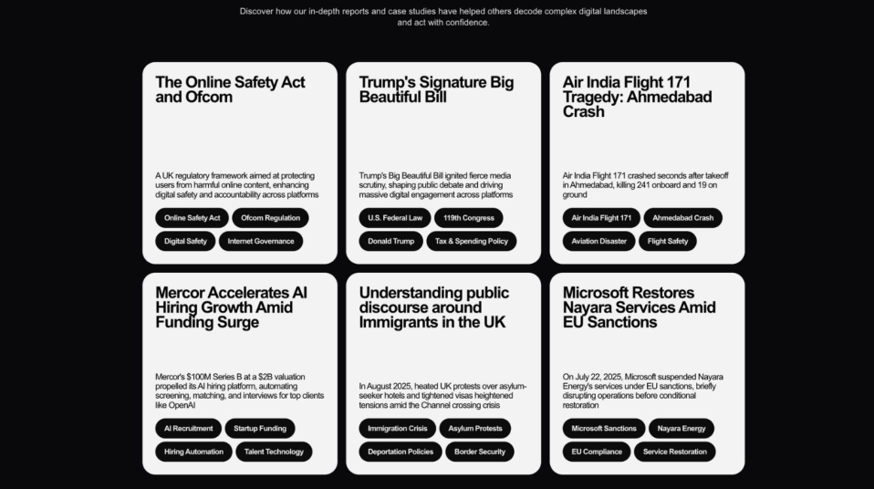

3.7M+
posts collected across investigations
See the accounts shaping your feed before they shape your views.
An AI copilot for public discourse · by SimPPL, a U.S. 501(c)(3) nonprofit
of Americans trust the mass media. The lowest reading in Gallup's five-decade trend (Sept 2025).
of people worldwide are worried about what is real and what is fake online when it comes to news (Reuters Institute, 2025).
of Americans now get news via social media and video networks, ahead of TV for the first time (Reuters Institute, 2025).
AMERICANS WITH A GREAT DEAL OR FAIR AMOUNT OF TRUST IN MASS MEDIA · GALLUP
On Twitter, true stories took about six times as long as false ones to reach 1,500 people (MIT, Science, 2018). By the time a claim is checked, the campaign that planted it has moved on.
Each platform moderates only its own feed. A campaign that runs on X, YouTube, Telegram, and WhatsApp at once shows each moderation team a quarter of the picture, and no one is looking at the whole.
OnPassive, an "AI-powered" tech scheme, ran its promotion on five platforms at once. The SEC charged it with fraudulently raising over $108 million from more than 800,000 investors. Each platform saw only its own slice.
We help collect public social data from sources within platform terms of service, including platform-granted APIs, across X, YouTube, Reddit, Bluesky, Instagram, Facebook, TikTok, LinkedIn, Telegram, and 4chan, plus 20,000+ newspapers and Wikidata.
Posts cluster into themes and sub-themes. Each theme surfaces the accounts moving it, with per-actor dossiers and influence maps.
Deep research agents answer your questions across the corpus and cite every post they draw on. You keep the judgment.
Pick a topic or a set of accounts, set a date window, and Arbiter builds the corpus. 31 public case studies are open to read today, from the Online Safety Act to Air India 171.
Every study keeps its sources attached: each number traces back to the posts behind it.

Posts cluster into themes, themes into sub-themes, and each cluster names the accounts driving it. The graph turns a feed into a map: who amplifies whom, in which language, on which platform.
Reports built this way sit behind both platform outcomes on the track-record slide: X's internal investigation and Meta's Bangladesh takedown.
We asked this on the Traoré study, live, on July 8. The agent read the 191 posts, ranked the accounts by engagement, and checked where each one sends its audience.
The answer came back with a sortable table and a finding we could act on: the top posts carry no outbound links at all. This engagement lives in native video, so link-tracing tools would miss it.
Every row ties back to the posts behind it. A question like this costs 5 credits and takes under a minute.
Engagement is driven by a small set of accounts, mostly via high-performing posts that don't include outbound links: native video and text rather than link-sharing.
| Account | Posts | Interactions | Outbound links |
|---|---|---|---|
| zoomafrika1 | 1 | 56,860 | none detected |
| SahelAlerte | 1 | 29,721 | none detected |
| WelcomeTheGulag | 1 | 23,175 | none detected |
| kelevitch | 1 | 22,426 | none detected |
| WithoutHistory | 1 | 10,499 | none detected |
| kwadwosheldon | 1 | 8,725 | youtube.com |
Platforms do not share data with each other, so cross-platform patterns stay invisible. Retrieval has to rebuild the picture.
Ask an LLM to label clusters one at a time and it repeats itself. The failure is documented across the field (Ziems et al. 2024).
An agent that picks tools and writes code can be wrong quietly. We grade every answer against hand-written baselines.
Most listening tools answer with RAG over whatever their feeds already collected. Arbiter plans the collection itself and surfaces conversations you did not know to ask for. The next slides show the method; the appendix lists every model.
The Context Expansion Engine breaks a question into actors, organizations, places, and phrases. It draws on a daily-refreshed knowledge graph: Wikipedia, GDELT, national and regional news.
Keyword search catches exact strings like #BurkinaFaso that embeddings miss. Semantic search over 1024-dim embeddings catches paraphrases with no keyword overlap. Reciprocal rank fusion merges the two rankings.
A neural reranker scores each candidate against the original question, 0 to 1. Scores stay comparable across topics, so a single threshold drops 60 to 80% of candidates.
We grade the whole funnel against posts we labeled by hand. On that benchmark, reranking lifted the share of relevant results in the top 200 from 81% to 99%.
The public walkthrough at arbiter.simppl.org/features: one question became 130 posts on three platforms, including skeptic domains the user never typed.
"White monkey" is coded slang for foreigners hired as props by Chinese firms. The wording moves too fast for keyword lists, so the engine reads the intent of the question and retrieves posts that share none of its words. Expansion casts wide; the whole funnel, plan through rerank, keeps what answers.
A keyword tool returns matches. We asked one question about Ibrahim Traoré, collected 22,719 posts, and kept the 19,532 relevant ones. Arbiter organizes them into a map you can walk, concept to sub-concept to post, including conversations the query never mentioned. click any row below
The YouTube tab of this study holds 51 concepts, 41 sub-concepts, and 3,817 posts from 1,115 users; this slide walks one path. The rest open in the live study.
Say a search comes back with 100,000 posts. Point an LLM at them naively and the bill explodes while the labels collapse into duplicates: 28 of 53 clusters in one corpus came back with the same label.
We organize before any LLM reads the corpus. UMAP and HDBSCAN group posts by meaning, the combination that scored highest for cluster quality across the five clustering methods we tested.
The LLM then labels whole clusters, so cost scales with a few dozen clusters instead of a hundred thousand posts. It proposes several labels per cluster, and any that lands too close to an existing label is thrown out.
The LLM provides the vocabulary. The geometry enforces distinctness.
Average pairwise label similarity, lower is better. We benchmarked eight strategies; ours keeps over 98% of labels unique.
The same embedding space powers entity extraction: nine entity types, resolved to Wikidata, name variants merged automatically. Each actor gets sentiment, emotion, and a clickbait score on a five-point scale.
Arbiter sits as an analytical layer over social platforms and online sources. Signals compose into tactics: manufactured consensus, coordinated amplification, borrowed legitimacy, undisclosed promotion. We audit the classifiers in non-Latin scripts, Hindi through Cyrillic, so a campaign cannot hide behind an alphabet.
The agent picks from an analysis toolkit of 30+ functions across six families: actor profiling, topics, themes, claims, retrieval, and visualization. It answers by writing code against the corpus in a sandbox.
Each answer is a tool-calling loop capped at eight steps, and the executor writes and runs TypeScript in a sandbox. An answer arrives as an artifact you can verify: the code it ran and the posts it cites.
We graded 540 agent runs by hand across nine case studies. An LLM judge scores the code the agent writes against implementations we built ourselves, on everything from tool choice to error recovery.
That grading runs continuously in production. Flagged errors become the input to prompt-optimization runs (GEPA, appendix table), with no person inside each loop. Our engineers review the surfaced error patterns at the system level; each fix propagates to every future query.
Top failure codes across 540 graded runs; the most common defect is answering in prose when code was needed. Partners see what the agent gets wrong before they rely on it.
Getting the posts is the straightforward part. The layer that turns them into evidence is what we build, and it carries five problems at once.
Coordinated pages promote Ibrahim Traoré with sentiment reading 100% positive, 100% joy. Organic discourse rarely reads this way.
One account lands 88.8K interactions from a single post (views, comments, and likes combined). Its clickbait score is a clean 1 of 5. The campaign is built to look like ordinary fan praise, and to a casual reader it does. Arbiter flags it anyway: organic audiences disagree with each other, and this one never does.
Fake factories, fake railways, fake tributes, drawing millions of views before any platform labels them.
Uniformly green panels are the anomaly that starts the investigation.
One year on (May 26 to Jun 2, 2026), a rebuilt network of 30 channels cut from one naming template works the same beat, now with tip jars, memberships, and merch links attached. One of the 2025 actors is back under the same name.
"This video is no longer available because the YouTube account associated with this video has been terminated."
Two studies built with Migrasia read 2,251 recruitment posts from 1,444 accounts. Most scam posts work hard to look legal: 489 Indonesian posts open with words like "resmi" (official) and "no upfront fee", and 183 Filipino posts print a recruitment licence number.
The contact details give the networks away: one shortened link posted by 21 regional job pages under different names; six profiles that all route to a single WhatsApp number; in the Philippines, 34 shared phone numbers and emails tie the pages into 14 networks.
One agency kept posting vacancies under licence DMW-011-LB-051822-R after that licence had expired, so the licence number itself was part of the sales pitch.
Recruitment tactics by post count, Indonesian corpus (1,492 posts); bars scaled to the leader.
A quarter of the Filipino corpus is the aftermath: airport interdictions, arrests for illegal recruitment, repatriations of trafficking victims.
Two months of high-engagement posts drew 127.3M interactions. The content is sold as self-improvement: "looksmaxxing" routines and testosterone regimens, with verified health information pushed aside.
Engagement runs on a star system: the top 3 accounts take 14.6% of all engagement, while the highest-volume cluster (1.8K posts) registers 0.0%. Culture-war framing carries 57% of interactions; belonging and dating discourse carries 56.8%.
The report maps outbound audience redirection: the links actively shared to move audiences off-platform, and the content driving them there.
Share of total interactions carried by each theme (themes overlap, so shares exceed 100% combined).
Inside the conversation, a few accounts like @DrewPavlou and @MikhailaFuller carry it, each turning one or two posts into millions of interactions. The recurring claims run from testosterone decline to dating advice, wrapped in culture-war and media-accountability framing; Netflix's documentary was one entry point.
A vendor printing error sent some voters the wrong party's primary ballot. Unable to identify who was affected, the state re-sent replacements to everyone mailed a ballot before May 14, covering 500,000+ requests. Originals were voided; every return envelope carries a unique identifier, so officials state there is no risk of duplicate voting.

The official explanation, cited in the study across X, Facebook, and Bluesky.
The stakes were legislative: the study's top post (1.32M interactions) demanded the Senate attach the SAVE America Act, which would require in-person documentary proof of citizenship to register and would replace automatic mail-ballot delivery with application-only mail voting. The false ballot claims circulated as the Senate weighed it; the act passed the House 218–213 and failed in the Senate.
A tip, a beat, a policy window. We scope the corpus, platforms, and dates together.
Retrieval, themes, and actor dossiers land in a case-study library. Your analysts question it through the agent, with a citation on every answer.
The findings are yours to publish. Evidence stays attached, so editors and reviewers can audit every number.
One scoped corpus replaces manual sweeps across four platform search bars.
Claim clustering scales one verified check to thousands of grouped posts.
Coordinated campaigns surface before they reach your abuse reports.
Our scored corpora and dossiers slot in as an analytical layer under your platform.
Model stages are commodity parts; the retrieval planning, the thresholds, and the grading harness are ours. When a better model appears, we swap the part and your workflow does not change.
Journalists from 150+ organizations in 12 countries have signed up, spanning newsrooms, civil society, and policymakers. YouTube grants us 1.2M API calls a day for data access. The harms repeat across borders, so investigations built in one country become templates for the next. Inbound users include existing Dataminr and Meltwater customers asking to switch. Stanford picked Arbiter for this year's platform workshop with trust and safety leaders; Meta, YouTube, and TikTok held that slot in past years.
Former postdoc in AI safety at MIT and Boston University. Board member at Integrity Institute. Built AI systems at Twitter, Adobe, and Slack. Google Research Innovator.
Led audience-analytics ML as Data Scientist III at Bombora. M.S. in Data Science at NYU. Fellow with the Center for AI and Digital Policy.
System design and infrastructure, NLP and deep research agents, platform backend and APIs.
14 peer-reviewed papers (NeurIPS, ICML, AAAI, ICWSM). Awards from Google, Mozilla, Wikimedia, Ford, and Omidyar. Bootstrapped as a nonprofit since 2021.
Collects public social data within platform terms of service, clusters themes, maps actors and networks, and answers questions with a citation for every claim.
Draws the conclusions. Journalists, researchers, and trust & safety teams keep the judgment; Arbiter keeps the evidence attached.
We fact-source: the system surfaces claims and groups related ones, so one verified fact-check scales to thousands of posts. We spent a year building this with Wikimedia.
The case files in this deck are public studies from 2025 and 2026 windows. A study scoped to your issue tracks your actors, in your languages, on your timeline.
Request a demo: write to team@simppl.org
and we follow up within the week.
A pilot is one case study scoped to your issue: we set the date window together, run the investigation with you, and you keep the evidence and the sources. Our grants subsidize free access for independent journalists and fact-checkers, and paid subscriptions with larger newsrooms and civil society clients generate growing revenue each year. Free investigation reports land in your inbox via simppl.org/newsletter. The platform is live at arbiter.simppl.org.